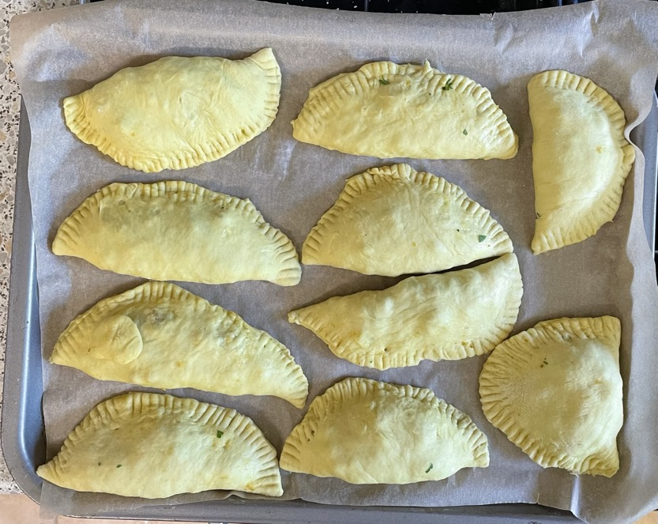

Sambousek
Filling
-
Fry until soft
- olive oil
- 1 onion
- Fry for 2 min
- Add and cook for 90 seconds stirring constantly
- 250g sirloin steak trimmed of fat and finely chopped (180g)
- 1 tsp ground cumin
- ½ tsp salt
- ½ tsp ground ginger
- ½ tsp ground cinnamon
- ½ tsp ground turmeric
- ¼ tsp Aleppo chilli flakes
- ¼ tsp paprika
- ¼ tsp ground cardamom
-
Add and cook for 2 mins
- 1 tin chickpeas half crushed with fork
- Remove heat and add
Pies
- Get seeds ready in bowl
- Make pies with Pastry 2
- Sprinkle with sesame and nigella seeds
Notes
Pics
